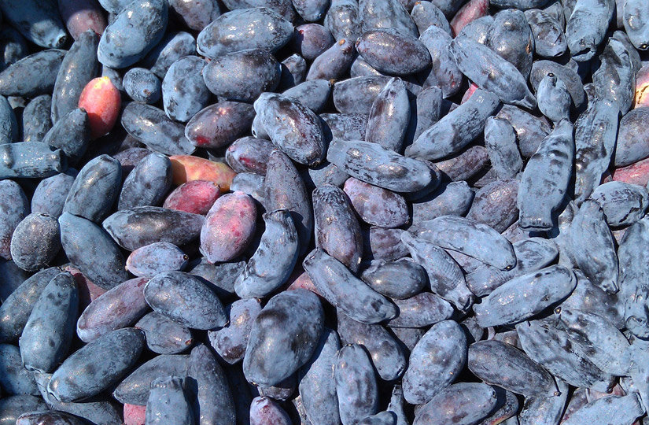
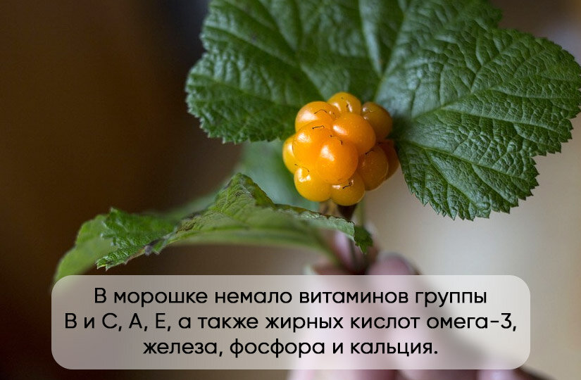
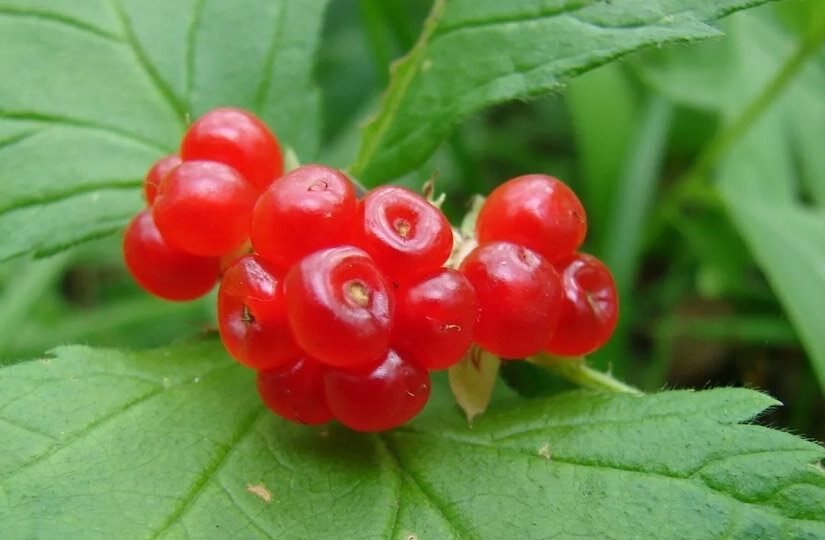
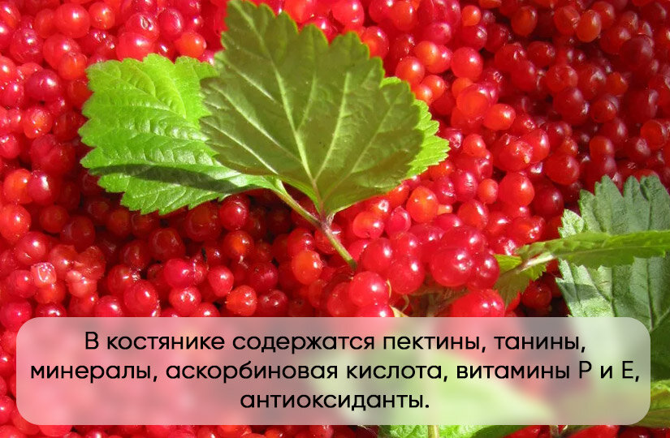

Клубника, малина, черешня и арбуз — самые популярные ягоды в России. Однако мы расскажем про другие — редкие и уникальные. Они не всегда продаются в ближайшем супермаркете, но на рынке их отыскать можно.
Жимолость — суперфуд и источник жизни На Западе сочные синие ягоды довольно популярны и продаются как суперфуд под названием «хаскап» — так называли жимолость коренные жители Японии айны, а ведь именно из Азии она начала свое распространение. Однако по факту хаскап — лишь один из сортов жимолости, а всего их чуть меньше 200. соглашение. У садовой жимолости продолговатые темно-синие ягоды с уникальным вкусом — кисло-сладким, немного напоминающим голубику, малину и клюкву, но с характерной горчинкой. Созревает она раньше других садовых культур — уже в начале июня, то есть это одна из первых ягод, которыми можно лакомиться еще до сезона клубники.
Морошка — дикая ягода, распространенная в болотистой местности северных регионов. Искусственно она не культивируется, так как сложно воссоздать для нее естественную среду обитания. Научное название этого растения в переводе с греческого звучит как «земляная шелковица», а северные народы России величают ее царской ягодой, болотным янтарем и арктической малиной.По внешнему виду она действительно похожа на маленькую малину. Спелая морошка — всегда желто-янтарного цвета, а недозревшие ягоды, наоборот, красные. В каждой дольке морошки есть маленькая косточка, придающая характерную горчинку. Вкус самих ягод очень яркий — терпкий, сладко-кислый, с легким цитрусовым ароматом. Из-за кислого сока ее обычно едят с сахаром или сладкими продуктами (сливками, мороженым). Не рекомендуется перемалывать морошку в блендере: она начнет сильно горчить из-за косточек. Лучше всего ее перетирать через сито.По внешнему виду она действительно похожа на маленькую малину. Спелая морошка — всегда желто-янтарного цвета, а недозревшие ягоды, наоборот, красные. В каждой дольке морошки есть маленькая косточка, придающая характерную горчинку. Вкус самих ягод очень яркий — терпкий, сладко-кислый, с легким цитрусовым ароматом. Из-за кислого сока ее обычно едят с сахаром или сладкими продуктами (сливками, мороженым). Не рекомендуется перемалывать морошку в блендере: она начнет сильно горчить из-за косточек. Лучше всего ее перетирать через сито.
 Еще одна лесная ягода, напоминающая малину, — костяника. Только косточки в ее дольках намного крупнее — отсюда и название, и сравнение с гранатом. В отличие от морошки, костянику иногда выращивают на дачных участках.Ягоды костяники крупные, ярко-красного, иногда оранжевого цвета, с вяжущим кисло-сладким вкусом. За выраженную кислинку отвечает аскорбиновая кислота, а за терпкость — пектины и танины. Также в костянике содержатся цинк, железо, марганец, витамины Р и Е, антиоксиданты. При употреблении в сыром виде ягода укрепляет стенки сосудов, предупреждает развитие атеросклероза и может снижать артериальное давление.
Ягоды костяники крупные, ярко-красного, иногда оранжевого цвета, с вяжущим кисло-сладким вкусом. За выраженную кислинку отвечает аскорбиновая кислота, а за терпкость — пектины и танины. Также в костянике содержатся цинк, железо, марганец, витамины Р и Е, антиоксиданты. При употреблении в сыром виде ягода укрепляет стенки сосудов, предупреждает развитие атеросклероза и может снижать артериальное давление.
Предыдущая